Úkol 02 - Želva Žofka
Část 1
Nejprve dodělejte program z hodiny. Konkrétně obrazce hvězdičky, domečku a prasátka. Vytvořte metodu nakresliHvezdicku() a zavolejte ji v hlavním programu. Podobně, jak jsme to dělali v hodině s metodou nakresliDomecek(), nakresliPrasatko() a nakresliNozicky(). Jako bonus můžete dokreslit i ocásek.

Část 2
Udělejte si kopii projektu 10-Turtle na 30-Turtle-Ukol. Provedete to tak, že jednoduše ve správci souborů (Tento počítač, Průzumník, Total Commander, Finder, Commander One ...) zkopírujete složky 10-Turtle a přejmenujete ji na 30-Turtle-Ukol.
Další změny už provádějte jen do 30-Turtle-Ukol.
Nakreslete několik obrazců podle obrázků níže. Pro každý obrázek vytvořte metodu a případně uvnitř volejte další metody.
Poznámka: Želva neumí kreslit zakřivené čáry. Kolečko a podobné tvary nakreslíte tak, že nakreslíte krátkou čáru (třeba 5 pixelů), potom se otočíte o malý úhel (třeba 20 stupňů) a toto opakujete n-krát (třeba 18 krát).
Část 3
Nakreslete kompozici podle obrázku níže. Asi budete muset upravit velikost původních obrázků, protože 150 pixelů na stranu je pravděpodobně moc.

Část 4
Pomocí želvy nakreslete svoje křestní jméno. Na každé písmeno vytvořte samostatnou metodu. Pokud jste šťastlivkyně a jmenujete se například ANNA, budete to mít o dost jednodušší :-).
Odevzdání domácího úkolu
Nejprve appku (30-Turtle-Ukol)
zbavte přeložených spustitelných souborů.
Zařídíte to tak, že v IntelliJ IDEA vpravo zvolíte
Maven Projects -> Lifecycle -> Clean.
Úspěch se projeví tak, že v projektové složce zmizí
podsložka target.
Následně složku s projektem
zabalte pomocí 7-Zipu pod jménem Ukol02-Vase_Jmeno.7z.
(Případně lze použít prostý zip, například na Macu).
Takto vytvořený archív nahrajte na
Google Drive do složky Ukol02.
Vytvořte snímek obrazovky spuštěného programu a pochlubte se s ním v galerii Ukol02 na Facebooku.
Pokud byste chtěli odevzdat revizi úkolu (např. po opravě),
zabalte ji a nahrajte ji na stejný Google Drive znovu,
jen tentokrát se jménem Ukol02-Vase_Jmeno-verze2.7z.
Termín odevzdání je do úterý 16. 10. 2018 23:59. Pokud úkol nebo revizi odevzdáte později, prosím pošlete svému opravujícímu kouči/lektorovi email nebo zprávu přes FB.